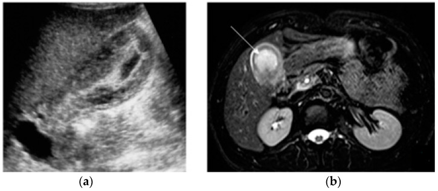
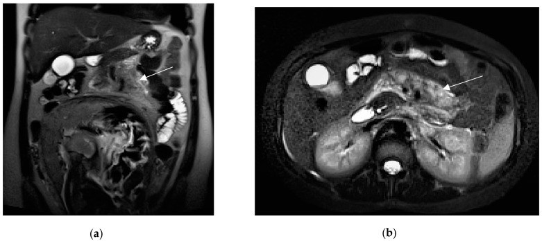
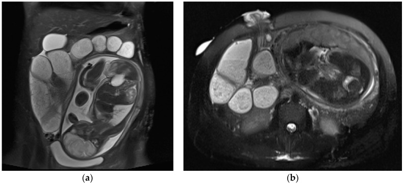
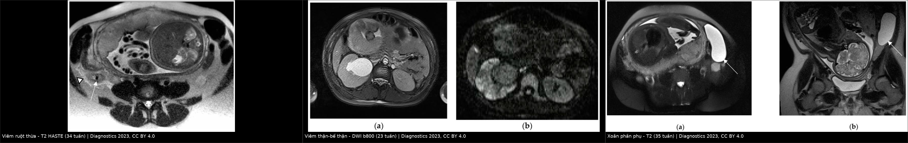
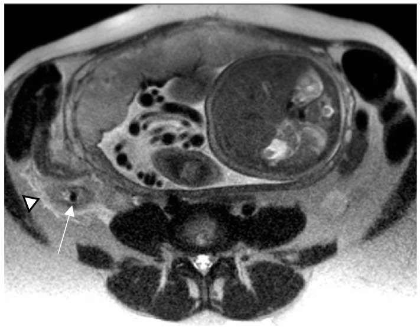
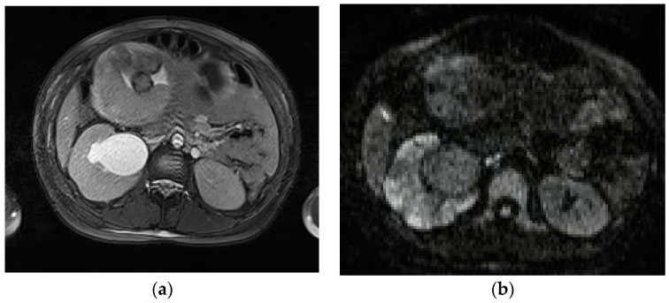
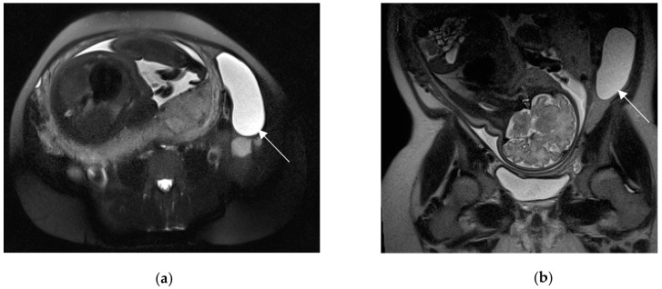

1817 — Đau bụng cấp ở thai phụ: protocol MRI không cản từ / Acute abdominal pain in pregnancy — non-contrast MRI protocol
Tags: pattern:daubung-cap pattern:viem pattern:dich-tu-do pattern:xoan-phu-khoa vung:o-bung vung:tieu-khung vung:thai-nhi protocol:MRI-khong-can-tu protocol:sieu-am-bung protocol:CT-bung-co-can-quang score:ACR-AC
Mức chắc chắn (certainty): tổng hợp y văn (literature synthesis) — ghép tổng quan hình ảnh 2 phần về đau bụng–chậu cấp trong thai và sau sinh (Diagnostics 2023, PMC10528445 phần sản khoa và PMC10528125 phần không sản khoa, CC BY 4.0), meta-analysis MRI cho viêm ruột thừa ở thai (19 nghiên cứu, World J Emerg Surg 2019, PMC6647167, CC BY) và tổng quan về liều xạ – gadolinium trong thai (Int J Womens Health 2019, PMC6371947, CC BY-NC). Số nào nguồn không đưa thì ghi "chưa rõ".
Câu chốt: thai phụ đau bụng cấp không phải "chống chỉ định chụp" — mà là đổi thứ tự: siêu âm (SA) trước → MRI không cản từ khi SA không kết luận → CT chỉ khi mẹ nguy kịch hoặc MRI không dùng được. Ngưỡng nằm lòng: ruột thừa > 7 mm, thành > 2 mm là bất thường; liều thai ≤ 50 mGy được coi là không đáng kể, trong khi CT bụng–chậu thường chỉ ~25 mGy (13 mGy khi dùng điều khiển phơi nhiễm tự động) — tức nỗi sợ CT thường lớn hơn nguy cơ thật, còn bỏ sót viêm ruột thừa vỡ làm thai mất tăng từ 1,5% lên ~6%.
1. Tổng quan bệnh học – cơ chế hình ảnh
1.1 Vì sao "cùng một đau bụng" nhưng thứ tự chẩn đoán khác hẳn
- Giải phẫu bị đẩy: tử cung to đẩy ruột thừa và manh tràng lên trên – ra ngoài, nên điểm đau không còn ở hố chậu phải điển hình — tới 25% thai phụ viêm ruột thừa không đau hố chậu phải (PMC10528125). Vì vậy field of view (FOV) MRI phải từ vòm hoành tới khớp mu, không chỉ tiểu khung.
- Sinh lý làm xét nghiệm nhiễu: bạch cầu tăng sinh lý, pha loãng máu, tăng CRP không đặc hiệu → hình ảnh là yếu tố quyết định, không phải công thức máu.
- Hậu quả của chậm trễ có số: hoãn mổ > 24 giờ làm tăng 66% tỉ lệ vỡ ruột thừa; thai mất ~1,5% khi chưa vỡ so với ~6% khi vỡ (PMC10528125). Đây là lý do bài này tồn tại.
1.2 Vì sao MRI không cản từ "nhìn được" đau bụng cấp (TẠI SAO — vật lý)
- T2 single-shot (SSFSE/HASTE) — xương sống của protocol: nước tự do (phù thành ruột, dịch quanh ruột thừa, nước tiểu, dịch mật, máu loãng) có T2 dài nên sáng; cơ – xơ – khí T2 ngắn nên tối. Vì thế chỉ một chuỗi xung T2 nhanh đã tách được "phù/dịch" (viêm, tắc, rò) khỏi "đặc", và hình học giải phẫu rõ vì SSFSE miễn nhiễm với chuyển động ruột và nhịp thở. Sỏi mật, sỏi thận, appendicolith, khí trong lòng ruột đều là "lỗ tối" trên nền dịch sáng — nguyên lý "vật cản tín hiệu" này là gốc của mọi dấu hiệu dưới đây.
- T1 (kèm fat-sat) — máu và mỡ: methemoglobin trong máu bán cấp làm T1 ngắn → sáng; mỡ sáng trên T1 nhưng tắt khi fat-sat. Do đó thoái triển đỏ của u xơ (huyết khối trong mạch u) hiện T1 sáng ± viền sáng, còn nang nước thì T1 tối – T2 rất sáng.
- DWI/ADC — mủ và nhồi máu: ứ mủ và thiếu máu làm hạn chế khuếch tán → DWI b = 800–1000 sáng, ADC tối; đây là cách phân biệt ổ viêm thận – áp-xe (ADC tối) với ứ nước đơn thuần (ADC không giảm). Ở viêm thận–bể thận, DWI nhạy hơn CT không cản quang (95% vs 67%) trong tổng quan PMC10528125.
- bSSFP (trueFISP/FIESTA) — mạch máu không cần thuốc: máu chảy nhanh cho tín hiệu rất sáng, nên nhìn được huyết khối tĩnh mạch buồng trứng như một khuyết tín hiệu trong lòng mạch sáng mà không cần gadolinium.
- Không có bức xạ ion hóa: đây là lợi ích duy nhất không thể thay bằng CT — nhưng không phải lý do để chụp MRI khi bệnh nhân không ổn định.
1.3 Ngưỡng định lượng nằm lòng (dùng ngay khi đọc)
| Đại lượng | Ngưỡng bất thường | Nguồn |
|---|---|---|
| Ruột thừa (đường kính ngoài) | > 7 mm | PMC10528125 |
| Thành ruột thừa | > 2 mm | PMC10528125 |
| Thành ruột non/đại tràng viêm | > 3 mm + phù dưới niêm mạc T2 sáng | PMC10528125 |
| Túi mật: đường kính ngắn / thành | > 3 cm / > 3 mm | PMC10528125 |
| Ruột thừa trên SA | > 6–7 mm, không xẹp được, thành > 2 mm = chẩn đoán xác | PMC10528125 |
| Liều thai "không đáng kể" | ≤ 50 mGy; dị tật tăng rõ > 150 mGy | PMC6371947 |
| Liều thai CT bụng–chậu | ~25 mGy, còn ~13 mGy với điều khiển phơi nhiễm tự động | PMC6371947 |
| Tiếng ồn MRI cho thai | ≤ 90 dB (khuyến cáo AAP) | PMC6371947 |
2. Mẫu hình + chẩn đoán phân biệt theo vị trí (gamut)
Thai phụ đau bụng cấp được chia theo 4 vùng định khu — mỗi vùng có một "hàng đầu" riêng, và MRI đọc theo vùng chứ không đọc "cả bụng mờ mờ".
2.1 Hố chậu phải (right lower quadrant)
- Viêm ruột thừa cấp (appendicitis) — hàng đầu: ~0,07% thai kỳ (1/1.500), hay gặp nhất quý II; là cấp cứu ngoại khoa không sản khoa phổ biến nhất (PMC10528125).
- Xoắn phần phụ (ovarian/adnexal torsion) — 1/800 thai kỳ, thường cuối quý I – đầu quý II khi tử cung lớn nhanh; là cấp cứu phụ khoa thứ 5 nói chung (2–3%) (PMC10528125).
- Sỏi niệu quản — 1/2.000 thai kỳ, là nguyên nhân không sản khoa hàng đầu gây đau bụng và nhập viện (PMC10528125).
- Viêm túi thừa/viêm ruột non đoạn cuối (Crohn), viêm phần phụ (PID), u xơ thoái triển đỏ, huyết khối tĩnh mạch buồng trứng (thể sau sinh).
- Cạm bẫy đặc thù thai kỳ: ruột thừa bị đẩy lên cao/gần rốn — nếu chỉ đặt FOV tiểu khung sẽ "không thấy ruột thừa" và kết luận sai là bình thường.
2.2 Hạ sườn phải (right upper quadrant)
- Viêm túi mật cấp / sỏi mật: sỏi mật gặp > 12% thai kỳ, nhưng bệnh có triệu chứng chỉ 0,1–0,3% (PMC10528125). Viêm túi mật cấp là chỉ định mổ không sản khoa đứng thứ 2.
- Viêm tụy cấp: 1/1.000–1/5.000 thai kỳ, thường quý III; nguyên nhân hay nhất là sỏi mật; tử vong mẹ giảm còn 3,3%, thai 11,6% (PMC10528125).
- HELLP/nhồi máu gan, gan nhiễm mỡ cấp (AFLP), hội chứng HELLP — bệnh cảnh sản khoa nhưng hình ảnh giống "bụng ngoại khoa"; phân biệt bằng HA, tiểu cầu, LDH, transaminase.

Viêm túi mật cấp: axial T2 fat-sat — túi mật căng, thành dày, dịch/thâm nhiễm mỡ quanh túi mật (mũi tên). Nguồn: Diagnostics 2023 (PMC10528125) Fig. 5, CC BY 4.0.
Viêm tụy cấp: coronal + axial T2 — phù/dịch quanh tụy len giữa các tiểu thùy (mũi tên). Nguồn: Diagnostics 2023 (PMC10528125) Fig. 6, CC BY 4.0.2.3 Hông lưng (flank)
- Ứ nước thận sinh lý: gặp tới 90% thai phụ, thường bên phải, gần như chỉ ở quý III — do progesterone giãn cơ trơn niệu quản + tử cung chèn niệu quản (PMC10528125). Đây là biến thể, không phải bệnh.
- Viêm thận–bể thận cấp: 1% thai kỳ; DWI là chuỗi xung quyết định.
- Sỏi niệu quản tắc nghẽn, áp-xe thận (ổ dịch thành dày, có khí), ứ mủ thận (pyonephrosis).
2.4 Lan tỏa / mạch máu (diffuse & vascular)
- Tắc ruột non (SBO): 0,001–0,003% thai kỳ nhưng tử vong mẹ 2% và mất thai 17%; nguyên nhân: dính sau mổ ~60%, thoát vị nội 15%, lồng ruột 12%, xoắn ruột 9% (PMC10528125).
- Huyết khối tĩnh mạch buồng trứng (OVT) sau sinh: 0,05–0,18% sinh đường âm đạo, 2% sau mổ lấy thai, 1–2% khi có viêm nội mạc tử cung; điển hình trong 7 ngày đầu sau sinh, sốt + đau bụng dưới/bên (PMC10528125).
- Huyết khối tĩnh mạch cửa/mạc treo, thuyên tắc phổi, vỡ tử cung – nhau bong non (nhóm sản khoa, xem bài 1604/560).

Tắc ruột non: coronal + axial HASTE — quai ruột giãn chứa dịch phía trên ổ dính (mũi tên); tìm transition point để xác định nguyên nhân. Nguồn: Diagnostics 2023 (PMC10528125) Fig. 3, CC BY 4.0.3. Bảng so sánh phân biệt (ma trận đối chiếu)
| Thực thể (entity) | Hình ảnh điển hình trên MRI không cản từ | Chốt vào (rule-in) | Chốt loại (rule-out) | Gợi ý xác nhận |
|---|---|---|---|---|
| Viêm ruột thừa cấp | Ruột thừa > 7 mm, thành > 2 mm, dịch lòng T2 sáng, appendicolith tối mọi chuỗi, mỡ quanh ruột thừa T2 sáng (stranding), ít dịch | Ruột thừa > 7 mm + thành > 2 mm + thâm nhiễm mỡ quanh | Ruột thừa bình thường thấy rõ ≤ 6 mm, xẹp, không thâm nhiễm → loại trừ mạnh (NPV gần 100% trong một số loạt) | MRI là chốt khi SA không kết luận; Se 91,8% / Sp 97,9% (19 nghiên cứu) |
| Xoắn phần phụ | Khối phần phụ lệch trục, phù buồng trứng, nang lớn / u quái, "whirlpool" cuống, tử cung lệch về bên tổn thương, ít dịch | Cuống xoắn + buồng trứng phù, tín hiệu giảm | Mô buồng trứng còn tín hiệu bình thường, có mạch → ít khả năng xoắn hoàn toàn | MRI (không cản từ) + ADC thấp hơn bên đối diện hỗ trợ; ngưỡng ADC chưa thống nhất |
| Sỏi niệu quản tắc | Lỗ tối trong lòng niệu quản trên T2 lát mỏng 3 mm, ứ nước trên chỗ tắc, dấu "cột nước đứng", phù quanh niệu quản/thận | Thấy sỏi + ứ nước trên mức sỏi | Ứ nước hai bên, không thấy sỏi, không chênh mức → nghĩ ứ nước sinh lý (tới 90%) | T2 FSE 3 mm; DWI; SA bổ trợ (Se SA chỉ 11–24%) |
| Viêm thận–bể thận / áp-xe thận | Thận to, phù, ổ hạn chế khuếch tán hình nêm; áp-xe = ổ dịch thành dày ± khí | DWI sáng + ADC tối hình nêm ở vùng thận đau | Ứ nước đơn thuần: ADC không giảm, không ổ khu trú | DWI/ADC (Se 95% vs CT không cản quang 67%) |
| Viêm túi mật cấp | Túi mật căng (đường kính ngắn > 3 cm), thành > 3 mm, dịch quanh túi mật, sỏi cổ túi mật (lỗ tối) | Thành > 3 mm + căng + dịch quanh + sỏi cổ | Thành mỏng, không dịch quanh, không sỏi kẹt → loại trừ | SA là first-line; MRI khi SA mờ/không kết luận |
| Viêm tụy cấp | Tụy to, phù, T2 sáng quanh tụy, dịch quanh tụy len giữa các tiểu thùy; DWI hạn chế ở thể sớm | Phù + dịch quanh tụy + lâm sàng đau thượng vị/lipase | Tụy bình thường, không dịch → loại trừ viêm tụy cấp | MRI/MRCP khi nghi sỏi ống mật chủ (Se > 90%) |
| Huyết khối tĩnh mạch buồng trứng | Tĩnh mạch buồng trứng giãn, khuyết tín hiệu trong lòng trên bSSFP/T1; viền viêm quanh tĩnh mạch | Khuyết tín hiệu lòng mạch + giãn > bình thường + sốt sau sinh | Lòng mạch sáng đều, không giãn → loại trừ | MRI không cản từ; CT tĩnh mạch khi cần nhanh |
| U xơ thoái triển đỏ | Khối cơ tử cung T1 sáng ± viền sáng, T2 tín hiệu thay đổi, không có cuống xoắn | T1 sáng trong khối u xơ đã biết + đau khu trú | Cuống xoắn + buồng trứng phù → xoắn phần phụ, không phải thoái triển | MRI; theo dõi giảm đau (thường tự giới hạn) |
| Tắc ruột non | Quai ruột giãn > 2,5–3 cm, mức dịch–hơi, điểm chuyển tiếp (transition point) với quai xẹp phía sau | Tìm được transition point + quai trên giãn | Không có điểm chuyển tiếp, quai không giãn → loại trừ | MRI SSFSE đa bình diện; CT khi nghi thiếu máu ruột |

Trái → phải: viêm ruột thừa (T2 HASTE, 34 tuần), viêm thận–bể thận (DWI b800, 23 tuần), xoắn phần phụ (T2, 35 tuần). Nguồn: Diagnostics 2023, PMC10528125 (Fig. 2, 7, 9), CC BY 4.0; ảnh ghép letterbox, không crop.3.1 Đọc theo chuỗi xung — "mỗi chuỗi trả lời một câu hỏi"
| Chuỗi xung | Câu hỏi nó trả lời | Dấu hiệu chốt |
|---|---|---|
| T2 SSFSE/HASTE (axial + coronal) | Có phù/dịch không? Giải phẫu có bị đẩy lệch không? | Ruột thừa > 7 mm; thành > 2 mm; dịch quanh tụy/túi mật; quai ruột giãn |
| T2 fat-sat | Dịch có thật hay là mỡ? | Stranding mỡ vẫn sáng sau fat-sat = phù, không phải mỡ bình thường |
| T1 dual-echo (in/out phase) | Có máu/mỡ trong tổn thương không? | Thoái triển đỏ: T1 sáng; nang máu: T1 sáng – T2 sáng |
| DWI b = 800–1000 + ADC | Có mủ/nhồi máu (hạn chế khuếch tán) không? | Ổ viêm thận, áp-xe, ổ mủ quanh ruột thừa: DWI sáng + ADC tối |
| bSSFP (trueFISP/FIESTA) | Mạch máu có thông không? | OVT: khuyết tín hiệu trong lòng tĩnh mạch sáng; huyết khối mạc treo |
| T2 FSE lát 3 mm (niệu quản) | Có sỏi trong lòng niệu quản không? | Lỗ tối trong cột nước sáng, ứ nước phía trên |
4. Protocol chụp + đường đi quyết định
4.1 Chuẩn bị và tư thế
- Nhịn ăn ngắn nếu tình trạng cho phép (giảm nhu động ruột và dịch dạ dày); không để bệnh nhân đau chờ đói.
- Bàng quang căng vừa (không quá căng) để đánh giá tử cung – phần phụ; tư thế nằm ngửa, thêm nghiêng trái ở quý III nếu tử cung chèn IVC gây chóng mặt/tụt HA.
- FOV: vòm hoành → khớp mu (vì ruột thừa bị đẩy lên cao) — đây là điểm khác biệt lớn nhất so với protocol bụng thường quy.
- 1,5 T là lựa chọn được khuyến cáo trong tổng quan 2019 ("pregnant women should be imaged at 1.5 T or less"; an toàn 3 T chưa được chứng minh) — phản biện: nhiều trung tâm hiện dùng 3 T với giới hạn SAR và chưa có bằng chứng hại; đây là điểm chưa đồng thuận, không phải chống chỉ định tuyệt đối.
- Giới hạn tiếng ồn ≤ 90 dB (khuyến cáo AAP) — dùng nút tai/ống nghe bảo vệ.
- Không dùng gadolinium thường quy: gadolinium qua được nhau thai, tồn lưu trong tuần hoàn thai; thí nghiệm trên động vật có nguy cơ dị tật, trên người chưa có bằng chứng rõ → tránh, chỉ dùng khi thật cần và sau tư vấn (PMC6371947).
4.2 Chuỗi xung tối thiểu (khoảng 20–30 phút, không cản từ)
| # | Chuỗi | Mặt phẳng | Mục đích |
|---|---|---|---|
| 1 | T2 SSFSE/HASTE | axial + coronal | Toàn cảnh; phù, dịch, quai ruột, ruột thừa |
| 2 | T2 fat-sat | axial | Tách phù mỡ thật; tổn thương phần phụ |
| 3 | T1 dual-echo | axial | Máu/mỡ; thoái triển đỏ; nang máu |
| 4 | DWI b800–1000 + ADC | axial | Mủ/áp-xe/nhồi máu thận, ổ mủ quanh ruột thừa |
| 5 | bSSFP | axial/coronal | Mạch máu không cần thuốc; OVT, huyết khối |
| 6 | T2 FSE 3 mm | coronal oblique theo niệu quản | Sỏi niệu quản nhỏ |
4.3 Khi nào buộc chuyển CT — và ngưỡng liều phải nói với mẹ
- Chỉ định CT: mẹ không ổn định (sốc, chấn thương nặng), MRI không có/không dùng được (máy tạo nhịp không tương thích, dị vật kim loại, sợ bí, không nằm được), cần đánh giá khí ngoài lòng ruột/thủng tạng (MRI kém nhạy với khí tự do), hoặc MRI đã không kết luận mà chậm trễ gây hại.
- Ngưỡng để trấn an: dị tật thai không tăng rõ ở liều ≤ 50 mGy, chỉ tăng rõ > 150 mGy; CT bụng–chậu thường ~25 mGy (còn ~13 mGy khi dùng AEC) → dưới ngưỡng 50 mGy, tức lợi ích chẩn đoán thường lớn hơn nguy cơ (PMC6371947). Đừng hứa "không ảnh hưởng gì" — hãy nói đúng con số.
- I-ốt cản quang: có thể dùng khi cần thông tin không thể có nếu không cản quang; chưa có bằng chứng gây quái thai (PMC6371947).
4.4 Sơ đồ quyết định
flowchart TD
A[Thai phụ đau bụng cấp] --> B[Siêu âm bụng - chậu + Doppler]
B -->|Chẩn đoán rõ| C[Điều trị theo chẩn đoán]
B -->|Không kết luận| D{Mẹ ổn định?}
D -->|Có| E[MRI không cản từ: T2 SSFSE + T1 + DWI + bSSFP]
D -->|Không| F[CT bụng - chậu có cản quang: khoảng 25 mGy, 13 mGy khi dùng AEC]
E -->|Chẩn đoán rõ| C
E -->|Vẫn không rõ| G{Nghi thủng tạng, khí tự do, chấn thương?}
G -->|Có| F
G -->|Không| H[Theo dõi lâm sàng + siêu âm lặp lại sau 12-24 giờ]
F --> C
5. Biến thể bình thường và cạm bẫy
5.1 Biến thể bình thường dễ gọi nhầm bệnh
- Ứ nước thận sinh lý: tới 90%, bên phải, quý III, không đau khu trú, không thấy sỏi, không chênh mức nước hai bên rõ → không được gọi là "tắc nghẽn". Chỉ chụp thêm/đặt stent khi có sỏi + đau + nhiễm trùng/ứ mủ.
- Ruột thừa "không thấy" không đồng nghĩa bình thường: ở thai phụ, ruột thừa bị đẩy lên cao; nếu FOV chỉ tới rốn thì âm tính giả. Phải quét tới vòm hoành và tìm dọc manh tràng đã di chuyển.
- Tĩnh mạch buồng trứng giãn sau sinh: giãn nhẹ trong vài ngày đầu sau sinh là bình thường; chỉ gọi OVT khi có khuyết tín hiệu trong lòng mạch + viền viêm + sốt.
- Dịch ổ bụng lượng ít quanh buồng trứng/ruột thừa có thể sinh lý (nhất là sau rụng trứng); chỉ có giá trị khi kèm phù thành/tổn thương khu trú.
5.2 Cạm bẫy (pitfall)
- Sai FOV là cạm bẫy số 1: đặt FOV tiểu khung "cho nhanh" → bỏ sót ruột thừa lạc chỗ, tụy, ổ dưới hoành. Luôn từ vòm hoành.
- DWI ở mặt phân cách khí – mô: biến dạng hình học và "sáng giả" ở ruột non/quanh đại tràng; luôn đối chiếu ADC — sáng DWI mà ADC không tối thì không phải hạn chế khuếch tán thật.
- 3 T: artifact điện môi/banding và SAR cao hơn; nếu ảnh kém, hạ về 1,5 T thay vì tăng thời gian quét (bệnh nhân đau, thai máy).
- Thoái triển đỏ vs xoắn phần phụ: cả hai đều đau cấp + khối; T1 sáng trong u xơ đã biết nghiêng thoái triển đỏ; cuống xoắn + buồng trứng phù nghi xoắn — đừng mổ u xơ "cấp cứu" khi thực ra là xoắn buồng trứng.
- Satisfaction of search: thấy sỏi mật không loại trừ viêm ruột thừa; thấy ứ nước thận không loại trừ viêm ruột thừa sau tử cung. Đọc lại toàn bộ FOV trước khi kết luận.
- Không dùng MRI để "chứng minh không có bệnh" ở bệnh nhân đang sốc: ổn định trước, chẩn đoán sau.
- Gadolinium "cho chắc": không có chỉ định đặc biệt thì không dùng; thuốc qua nhau thai, và không có ngưỡng an toàn đã chứng minh.
6. Tự lượng giá — Blind Quiz
Ca 1 — Đau bụng phải ở thai 34 tuần

- Gợi ý lâm sàng: thai 34 tuần, đau bụng phải, sốt nhẹ; siêu âm không thấy ruột thừa.
- Câu hỏi: (1) Cấu trúc hình ống bất thường nằm ở đâu? (2) Dấu hiệu nào chốt viêm ruột thừa? (3) Vì sao "không thấy ruột thừa" trên siêu âm không loại trừ?
Bấm để hiện đáp án (findings + chẩn đoán)
- Dấu hiệu: ruột thừa giãn, thành dày, chứa appendicolith tối tín hiệu (mũi tên), thâm nhiễm mỡ quanh ruột thừa (đầu mũi tên) — tương ứng > 7 mm, thành > 2 mm.
- Chẩn đoán: viêm ruột thừa cấp trên thai 34 tuần. Appendicolith = vật cản tín hiệu mọi chuỗi (không có proton tự do) nên tối cả T1 lẫn T2; mỡ quanh ruột thừa sáng trên T2 vì phù (nước tự do).
- Vì sao SA âm không loại trừ: tử cung đẩy ruột thừa lên cao, ruột non che lấp; tổng quan ghi nhận Se SA 77% / Sp 75% (1.593 bệnh nhân) và giảm theo tuổi thai (Se 69% → 63% → 51% ở 3 quý).
- Nguồn ảnh: Diagnostics 2023, PMC10528125, Fig. 2, CC BY 4.0.
Ca 2 — Đau hông lưng + sốt ở thai 23 tuần

- Gợi ý lâm sàng: thai 23 tuần, đau hông lưng phải, sốt; không có sỏi thấy trên siêu âm.
- Câu hỏi: (1) Hai ảnh (a) và (b) khác nhau ở chuỗi xung nào? (2) Tổn thương hình nêm tăng tín hiệu trên (b) nghĩa là gì? (3) Phân biệt với ứ nước thận sinh lý bằng gì?
Bấm để hiện đáp án (findings + chẩn đoán)
- Dấu hiệu: (a) T2 fat-sat: thận phải to, phù, bể thận giãn; (b) DWI b800: vùng hình nêm tăng tín hiệu ở nhu mô thận phải = hạn chế khuếch tán (viêm thận – bể thận cấp).
- Chẩn đoán: viêm thận–bể thận cấp. DWI sáng + ADC tối = phù tế bào/mủ; ứ nước đơn thuần không làm ADC tối.
- Giá trị: trong tổng quan, DWI nhạy 95% so với CT không cản quang 67% cho viêm thận; ứ nước sinh lý gặp tới 90% thai phụ nên không được nhầm là nguyên nhân đau.
- Nguồn ảnh: Diagnostics 2023, PMC10528125, Fig. 7, CC BY 4.0.
Ca 3 — Đau bụng dưới ở thai 35 tuần, SA thấy nang

- Gợi ý lâm sàng: thai 35 tuần, đau bụng dưới trái cấp; siêu âm thấy nang phần phụ trái.
- Câu hỏi: (1) Nang nằm ở đâu so với tử cung? (2) Dấu hiệu nào gợi xoắn? (3) Vì sao không nên chờ "hết đau rồi chụp lại"?
Bấm để hiện đáp án (findings + chẩn đoán)
- Dấu hiệu: nang ~8 cm ở phần phụ trái, bị ép giữa tử cung có thai và thành bụng, phù/lệch trục, cuống xoắn; tử cung lệch nhẹ về bên tổn thương.
- Chẩn đoán: xoắn phần phụ trái trên thai 35 tuần — nang lớn + tử cung to tạo điều kiện xoắn; 1/800 thai kỳ, thường cuối quý I – đầu quý II.
- Vì sao không chờ: xoắn kéo dài → nhồi máu buồng trứng, phải cắt phần phụ; mổ giải xoắn sớm bảo tồn được buồng trứng. Không cần gadolinium: T2 + bSSFP/DWI đủ đánh giá.
- Nguồn ảnh: Diagnostics 2023, PMC10528125, Fig. 9, CC BY 4.0.
Bài liên quan chéo
- 500 – Tổng quan Hệ Vú & Sản phụ khoa
- 1796 – Chylomicronemia trong thai kỳ: viêm tụy cấp & MRI không cản từ
- 1623 – Huyết khối tĩnh mạch buồng trứng sau sinh (POVT)
- 1630 – Khối phần phụ nghi ác trong thai kỳ: MRI không gadolinium & thời điểm mổ
- 1640 – Xoắn tử cung trong thai kỳ: ngưỡng > 45° & dấu "whirlpool"
- 1604 – Thai kỳ sau điều trị chửa ở sẹo mổ lấy thai: PAS & kết cục sinh sản
- 550 – Thai sớm: thai ngừng tiến triển & thai ngoài tử cung
- 566 – Song thai: chorionicity, TTTS & TAPS
Ảnh
images/1817_dau-bung-cap-thai-phu_MRI_PMC10528125-g002.jpg— viêm ruột thừa, T2 HASTE (Fig. 2).images/1817_dau-bung-cap-thai-phu_MRI_PMC10528125-g007.jpg— viêm thận–bể thận, T2 + DWI (Fig. 7).images/1817_dau-bung-cap-thai-phu_MRI_PMC10528125-g009.jpg— xoắn phần phụ, T2 (Fig. 9).images/1817_dau-bung-cap-thai-phu_MRI_PMC10528125-g005.jpg— viêm túi mật, T2 fat-sat (Fig. 5).images/1817_dau-bung-cap-thai-phu_MRI_PMC10528125-g006.jpg— viêm tụy cấp, T2 (Fig. 6).images/1817_dau-bung-cap-thai-phu_MRI_PMC10528125-g003.jpg— tắc ruột do dính, T2 HASTE (Fig. 3).images/composite_ba-nguyen-nhan.jpg— ảnh ghép 3 nguyên nhân (tạo bằngtools/make_composite.py).- Nguồn + giấy phép từng ảnh:
images/CREDITS.md.
Không dùng để chẩn đoán độc lập khi chưa có người hướng dẫn.